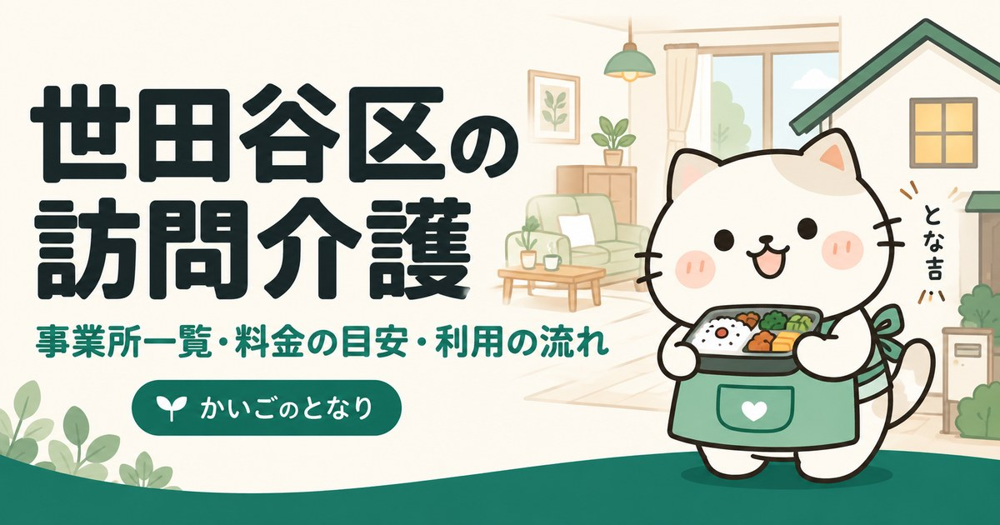

練馬区の訪問介護事業所一覧｜料金の目安と選び方

東京都練馬区で訪問介護（ホームヘルプ）を探している方へ。区内にある約180件の事業所から20件を連絡先つきで掲載し、あわせて自己負担額の目安、ヘルパーに頼めること・頼めないこと、相談から利用開始までの流れをまとめました。はじめて介護保険を使う方は、まず「地域包括支援センター」への相談から始めるのが近道です。
目次
練馬区で訪問介護を探すとき、最初に押さえること
練馬区には訪問介護事業所が約180件あります。相談窓口である地域包括支援センターは区内に27か所あり、担当する地区が決まっています。数が多いほど選択肢は広がりますが、そのぶん「どれも同じに見える」状態にもなります。絞り込みの軸は距離ではなく、希望する曜日・時間帯にヘルパーを確保できるかです。
練馬区では地域包括支援センターを区内各地に設置しています。要介護認定の申請方法、ケアマネジャー探し、事業所の選び方まで無料で相談できます。担当の窓口はお住まいの町名で決まりますので、連絡前にご自宅の町域を確認しておくと話が早く進みます。
はじめて介護保険を使う方は、要介護認定の申請から利用開始までの流れを先にご覧ください。申請から実際にサービスが始まるまで、1か月から1か月半かかります。
練馬区の訪問介護事業所一覧
練馬区内の訪問介護事業所から20件を掲載しています（2026年9月時点）。区内には約180件の事業所があり、全件は厚生労働省「介護サービス情報公表システム」で確認できます。掲載順は事業所の優劣を示すものではありません。
1訪問介護本舗 こねこ
- 所在地
- 東京都 練馬区 旭丘1-12-2 グラン・ジュテ1階
- 運営法人
- （株）こねこ
- 電話
- 03-6908-1830
- FAX
- 03-6908-1831
- 電話受付
- 9:00〜18:00
- 休業日
- 土・日・祝・年末年始
- 事業所番号
- 1372012722
2居宅移動支援事業所 エスエスピー
- 所在地
- 東京都 練馬区 練馬3-1-6 練馬ハイツ803
- 運営法人
- （一社）セルフサポートマネージメント
- 電話
- 03-6914-7727
- FAX
- 03-6914-7727
- 電話受付
- 9:00〜18:00
- 休業日
- 日・年末年始
- 事業所番号
- 1372008787
3訪問介護ファミリー・ホスピス大泉学園
- 所在地
- 東京都 練馬区 大泉学園町2-1-24
- 運営法人
- ファミリー・ホスピス（株）
- 電話
- 03-6904-5646
- FAX
- 03-6904-5579
- 電話受付
- 9:00〜17:00
- 休業日
- 土・日・年末年始
- 事業所番号
- 1372014579
4ケアサポート サニーサイド
- 所在地
- 東京都 練馬区 石神井町3-17-14 コスモス石神井公園303
- 運営法人
- ＮＰＯ法人 サニーサイド
- 電話
- 03-5393-0368
- FAX
- 03-5372-5353
- 電話受付
- 9:00〜18:00
- 休業日
- 日・祝・年末年始
- 事業所番号
- 1372002707
5薬師堂介護サービス
- 所在地
- 東京都 練馬区 富士見台3-55-3
- 運営法人
- （医社）平真会
- 電話
- 03-5393-5281
- FAX
- 03-5393-5283
- 電話受付
- 9:00〜18:00
- 休業日
- 日・祝・夏季・年末年始
- 事業所番号
- 1372000818
6ケアリッツ南大泉
- 所在地
- 東京都 練馬区 南大泉5-31-7 ハイム京塚103
- 運営法人
- （株）ケアリッツ・アンド・パートナーズ
- 電話
- 03-5935-7518
- FAX
- 03-5935-7519
- 電話受付
- 9:00〜18:00
- 休業日
- 土・日・祝・年末年始
- 事業所番号
- 1372013811
7やすらぎ舎ヘルパーステーション
- 所在地
- 東京都 練馬区 大泉学園町7-12-32
- 運営法人
- （社福）章佑会
- 電話
- 03-5387-6060
- FAX
- 03-5387-5588
- 電話受付
- 8:00〜18:00
- 休業日
- 年末年始
- 事業所番号
- 1372001386
8ときわ・ふれあいサービス
- 所在地
- 東京都 練馬区 平和台1-31-17
- 運営法人
- （有）ときわサービス
- 電話
- 03-5921-0776
- FAX
- 03-5921-0782
- 電話受付
- 9:00〜17:00
- 休業日
- 土・日・祝・年末年始
- 事業所番号
- 1372003259
9ニチイケアセンター春日町
- 所在地
- 東京都 練馬区 春日町2-4-35 北村ビル地下1階
- 運営法人
- （株）ニチイ学館
- 電話
- 03-5987-7060
- FAX
- 03-3577-2030
- 電話受付
- 9:00〜18:00
- 休業日
- 土・日・祝・年末年始
- 事業所番号
- 1372013118
10ヘルパーステーション Ｓａｎｇｏ
- 所在地
- 東京都 練馬区 大泉学園町5-10-36 サングリーンＢ102
- 運営法人
- （株）ＦＴＳ
- 電話
- 03-5935-8301
- FAX
- 03-5935-8295
- 電話受付
- 9:00〜18:00
- 休業日
- 日・年末年始
- 事業所番号
- 1372014868
11ケアリッツ大泉
- 所在地
- 東京都 練馬区 東大泉1-12-2 シャルム和泉1階
- 運営法人
- （株）ケアリッツ・アンド・パートナーズ
- 電話
- 03-5935-4247
- FAX
- 03-5935-4248
- 電話受付
- 9:00〜18:00
- 休業日
- 土・日・祝・年末年始
- 事業所番号
- 1372010593
12訪問介護 らいじんぐ
- 所在地
- 東京都 練馬区 大泉町2-59-22 サニーガーデン大泉1
- 運営法人
- （株）エリアスタ
- 電話
- 03-5905-6024
- FAX
- 03-5905-6023
- 電話受付
- 9:00〜18:00
- 休業日
- 土・日・祝・年末年始
- 事業所番号
- 1372002814
13はるかぜ
- 所在地
- 東京都 練馬区 春日町3-15-5
- 運営法人
- （同）はるかぜ
- 電話
- 03-5848-6728
- FAX
- 03-5848-6729
- 電話受付
- 9:00〜18:00
- 休業日
- 土・日・祝・夏季・年末年始
- 事業所番号
- 1372013464
14ケアプランニング結い
- 所在地
- 東京都 練馬区 東大泉3-22-15 シンフォニープラザ1階
- 運営法人
- （有）ケアプランニング結い
- 電話
- 03-5933-2100
- FAX
- 03-5387-3181
- 電話受付
- 9:00〜18:00
- 休業日
- 土・日・祝・年末年始
- 事業所番号
- 1372001501
15大泉訪問介護事業所
- 所在地
- 東京都 練馬区 東大泉2-11-21
- 運営法人
- （社福）練馬区社会福祉事業団
- 電話
- 03-5905-5332
- FAX
- 03-5387-2792
- 電話受付
- 8:30〜17:15
- 休業日
- 日・年末年始
- 事業所番号
- 1372001071
16訪問介護 和みケア
- 所在地
- 東京都 練馬区 上石神井3-34-21 ライオンズマンション上石神井第2-302
- 運営法人
- （株）和み
- 電話
- 080-3086-6213
- FAX
- 03-4291-7501
- 電話受付
- 8:00〜20:00
- 休業日
- 年末年始
- 事業所番号
- 1375425327
17ヘルパーステーション ぬくもり
- 所在地
- 東京都 練馬区 練馬1-15-1 堀越ビル2階
- 運営法人
- 東京ふれあい医療生活協同組合
- 電話
- 03-5912-3510
- FAX
- 03-5912-3516
- 電話受付
- 9:00〜18:00
- 休業日
- 年中無休
- 事業所番号
- 1372002996
18石神井のそら
- 所在地
- 東京都 練馬区 下石神井6-22-16 ブラッサム石神井公園2階
- 運営法人
- （株）のそら
- 電話
- 03-6913-2750
- FAX
- 03-6913-1360
- 電話受付
- 9:00〜18:00
- 休業日
- 土・日・年末年始
- 事業所番号
- 1372006534
19ＳＯＭＰＯケア 練馬 訪問介護
- 所在地
- 東京都 練馬区 豊玉北4-11-10 東洋ライス東日本支店ビル1階
- 運営法人
- ＳＯＭＰＯケア（株）
- 電話
- 03-6915-8751
- FAX
- 03-6915-8795
- 電話受付
- 9:00〜18:00
- 休業日
- 土・日
- 事業所番号
- 1372012185
20めぐみの会
- 所在地
- 東京都 練馬区 石神井町5-3-22-2階
- 運営法人
- （株）メディカル・アート
- 電話
- 03-5372-2783
- FAX
- 03-5372-2784
- 電話受付
- 9:00〜18:00
- 休業日
- 日・祝
- 事業所番号
- 1372003184
上記20件は、2026-09-21に練馬区および各事業者の公表情報で確認した内容です。営業時間・対応エリア・空き状況は変動しますので、連絡の前に必ず公式情報をご確認ください。掲載内容の訂正・削除のご依頼は運営者までご連絡ください。
掲載20事業所の内訳
練馬区内で掲載している20事業所を、所在地・運営法人・受付体制の3つの軸で集計しました。事業所ごとの詳細は上の一覧をご覧ください。
所在町域
訪問介護は、事業所から車や自転車で行ける範囲が実質的な対応エリアになります。練馬区内は46の町域に分かれており、同じ区内でも端から端までは距離があります。まずは自宅に近い町域の事業所から問い合わせるのが効率的です。
| 町域 | 掲載事業所 |
|---|---|
| 大泉学園町 | 訪問介護ファミリー・ホスピス大泉学園、やすらぎ舎ヘルパーステーション、ヘルパーステーション Ｓａｎｇｏ |
| 東大泉 | ケアリッツ大泉、ケアプランニング結い、大泉訪問介護事業所 |
| 春日町 | ニチイケアセンター春日町、はるかぜ |
| 石神井町 | ケアサポート サニーサイド、めぐみの会 |
| 練馬 | 居宅移動支援事業所 エスエスピー、ヘルパーステーション ぬくもり |
| 上石神井 | 訪問介護 和みケア |
| 下石神井 | 石神井のそら |
| 南大泉 | ケアリッツ南大泉 |
| 大泉町 | 訪問介護 らいじんぐ |
| 富士見台 | 薬師堂介護サービス |
| 平和台 | ときわ・ふれあいサービス |
| 旭丘 | 訪問介護本舗 こねこ |
| 豊玉北 | ＳＯＭＰＯケア 練馬 訪問介護 |
運営法人の種別
どの種別が良いということはありませんが、強みの出方が違います。掲載20件のうち株式会社 が11件と最も多く、全国展開の事業所はサービスが標準化され自費プランも整う。地域密着の小規模は融通が利くのが特徴です。
| 法人の種別 | 件数 | 傾向 |
|---|---|---|
| 株式会社 | 11件 | 全国展開の事業所はサービスが標準化され自費プランも整う。地域密着の小規模は融通が利く |
| 有限会社 | 2件 | 地域で長く続けている小規模事業所が多く、担当が変わりにくい |
| 社会福祉法人 | 2件 | 特別養護老人ホームなどを併設していることが多く、住み替えまで見据えて相談しやすい |
| 一般社団・財団法人 | 1件 | 特定の分野に特化した事業所が多い |
| 医療法人 | 1件 | 訪問看護や在宅医療と連携しやすく、医療的ケアが必要になったときに強い |
| 協同組合・生協 | 1件 | 組合員同士の支え合いが土台。地域に根を張った活動が長い |
| 合同会社 | 1件 | 近年に開設された事業所が多く、新しい体制で運営している |
| ＮＰＯ法人 | 1件 | 地域の助け合いから始まった事業所が多く、制度の隙間の相談にのってくれることがある |
詳しくは訪問介護事業所の選び方で解説しています。
電話の受付体制
掲載20件のうち、年中無休が1件、土日も電話を受けるところを含めると3件です。急な依頼や土日の相談が必要な方は、ここを先に見て絞り込んでください。
| 受付体制 | 件数 | こんな方に |
|---|---|---|
| 年中無休 | 1件 | 急な依頼や体調の変化に、曜日を気にせず相談したい方 |
| 土日も受付 | 2件 | 平日は仕事で電話できない家族が窓口になる場合 |
| 平日中心 | 17件 | 日中に連絡が取れる方。土日の緊急連絡先は別途確認を |
受付時間は最も早い事業所で8:00から、最も遅い事業所で20:00までです。いずれも電話の受付時間であり、訪問できる時間帯とは別です。
練馬区の料金は「1級地」
訪問介護の自己負担は「単位数 × 1単位あたりの単価 × 負担割合」で決まります。練馬区を含む東京23区は地域区分で最も高い1級地にあたり、1単位＝11.40円です。全国の「その他地域」（10.00円）と比べると、同じサービスでも約14％高くなります。
| よく使われるサービス | 単位数 | 1割負担 |
|---|---|---|
| 身体介護 20分以上30分未満 | 244単位 | 約278円 |
| 身体介護 30分以上1時間未満 | 387単位 | 約441円 |
| 生活援助 20分以上45分未満 | 179単位 | 約204円 |
※令和6年度介護報酬改定にもとづく基本報酬です。実際の請求には処遇改善加算などが上乗せされ、負担割合が2割・3割の方は金額が変わります。全サービスの単位数、8段階の地域区分、区分支給限度基準額、負担が重いときに使える仕組みは訪問介護の料金のしくみにまとめています。
問い合わせの前に確認しておくこと
練馬区の事業所に電話をかける前に、次の3点を手元に用意しておくと、1回の電話で話が決まります。
- ご自宅の町名・番地同じ練馬区内でも、事業所によって対応する町域が違います。上の一覧の「対応エリア」は目安なので、住所を伝えて確認するのが確実です。
- 必要な曜日と時間帯朝の起床介助と夕方の食事介助は依頼が集中します。「火・木の朝7時台」のように具体的に伝えてください。
- 要介護認定の状況認定済みなら要介護度を、申請中ならその旨を。未申請なら、事業所より先に地域包括支援センターへ相談してください。
よくある質問
練馬区で訪問介護を使うには、まず何をすればいいですか？
お住まいの地区を担当する「地域包括支援センター（地域包括支援センター）」への相談が最初の一歩で、練馬区では要介護認定の申請方法からケアマネジャー（居宅介護支援事業所）の紹介まで無料で案内してもらえます。認定を待つあいだに事業所を下調べしておくと、練馬区内で希望の曜日・時間帯が埋まる前に押さえられます。
練馬区には訪問介護事業所が何件ありますか？
2026年9月時点で、介護情報サイトの掲載ベースで約180件の訪問介護事業所が練馬区内にあります。本ページではそのうち20件を連絡先つきで掲載しています。全件は厚生労働省「介護サービス情報公表システム」で確認できます。
練馬区の担当窓口は、どうやって調べればいいですか？
地域包括支援センターは区内に27か所あり、担当地区が町名で決まっています。ご自宅の町名がわかれば、練馬区の公式ホームページか、下の町域一覧で見当がつきます。どこに連絡してよいか迷う場合は、練馬区内でいちばん近いセンターに電話すれば担当へつないでもらえます。
練馬区の掲載事業所は、どこを見て絞り込めばいいですか？
上の内訳表が目安になります。曜日を気にせず相談したい場合は年中無休の1件、平日の日中に電話できない場合は土日も受け付ける事業所（3件）から当たってください。そのうえで、ご自宅の町名を伝えて対応エリアに入っているかを確認するのが確実です。
訪問介護の自己負担はいくらくらいですか？
練馬区は介護報酬の地域区分で1級地（1単位＝11.40円）にあたるため、自己負担1割なら身体介護20分以上30分未満で約278円、生活援助20分以上45分未満で約204円が目安になります。処遇改善加算や区分支給限度基準額まで含めた考え方は練馬区に限らず共通なので、「訪問介護の料金のしくみ」にまとめました。
練馬区の事業所は、途中で変更できますか？
変更できます。担当のケアマネジャーに相談すれば、ケアプランを見直したうえで練馬区内の別の訪問介護事業所に切り替えられます。練馬区は掲載20件・区内約180件と候補があるので、相性やシフトの都合で変更する方は珍しくありません。
練馬区の町域一覧（対応エリアの目安）
練馬区の町域は46。五十音では8行にわたり、最も多いのはた行の9件です。掲載事業者の対応範囲は町域単位で分かれているため、問い合わせのときは「練馬区練馬」のように町名まで伝えてください。
- 旭丘
- 旭町
- 大泉学園町
- 大泉町
- 春日町
- 上石神井
- 上石神井南町
- 北町
- 向山
- 小竹町
- 栄町
- 桜台
- 下石神井
- 石神井台
- 石神井町
- 関町北
- 関町東
- 関町南
- 高野台
- 高松
- 田柄
- 立野町
- 豊玉上
- 豊玉北
- 豊玉中
- 豊玉南
- 土支田
- 中村
- 中村北
- 中村南
- 西大泉
- 西大泉町
- 錦
- 貫井
- 練馬
- 羽沢
- 早宮
- 光が丘
- 氷川台
- 東大泉
- 富士見台
- 平和台
- 南大泉
- 南田中
- 三原台
- 谷原
※町域ごとの事業者ページは、掲載できる事業者が3件以上そろった町域から順次公開します。
練馬区の他のサービスを探す
近隣エリアの訪問介護
- 厚生労働省「介護事業所・生活関連情報検索（介護サービス情報公表システム）」
- 練馬区「地域包括支援センター一覧」
- 練馬区「要介護・要支援認定の申請からサービス利用までの流れ」
- 令和6年度介護報酬改定 訪問介護 基本報酬単位数／介護報酬の地域区分（1級地・1単位11.40円）
- 日本郵便 郵便番号データにもとづく練馬区の町域一覧
- 区内事業所数の目安：ハートページナビ／LIFULL介護 各掲載件数（2026年9月時点）
最終確認日：2026-09-21／制度・料金は改定される場合があります。ご利用前に各窓口・各事業者で最新情報をご確認ください。